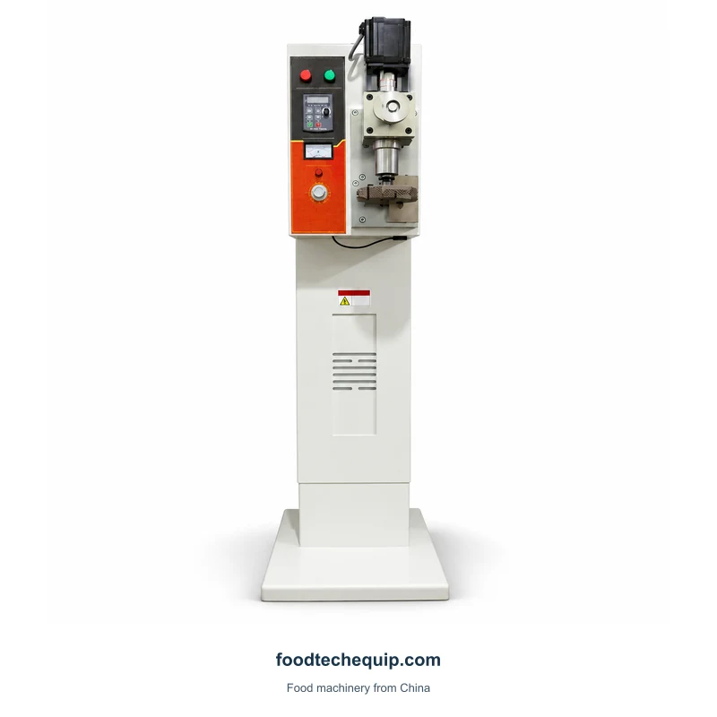
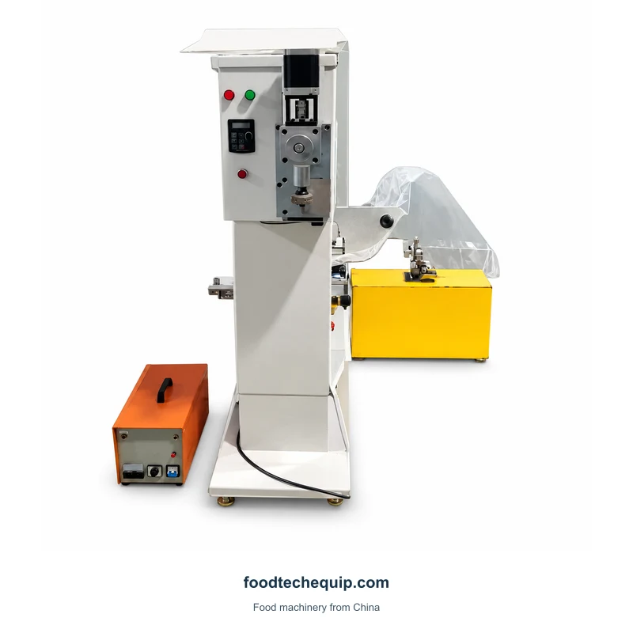

Soudure par ultrasons
Soudeuse ultrasonique de sachets en textile non tissé
Équipement de scellage par ultrasons pour les applications de sacs en tissu non tissé.
Voir l’équipement
Sélectionnez l’image pour l’afficher en plus grand.
Soudeuse ultrasonique de sachets sur socle avec commandes en façade. Cadence de soudure indiquée pour cette configuration de 8–15 emballages/min.
Choix de l’équipement · Conseils d’installation · Assistance à distance
Explorer les informations sur le produit ↓Décrire la construction de l’embouchure du sac et la manipulation par l’opérateur au rythme prévu. Incluez la position d’installation et les exigences de support lors de l’examen de la disposition de la machine.
Sélection d’un processus de scellage de sacs ou de tubes ↗Validez sur un échantillon la compatibilité des couches du sachet, les dimensions du joint et la cadence.
| Paramètre | Valeur | Unité | Configuration |
|---|---|---|---|
| Vitesse de conditionnement | 8-15 | paquets/min | Configuration de soudure |
| Poids | 130 | kg | Configuration de soudure |
Spécifiez les couches de matériaux et le joint prévu avant de comparer les modalités de travail. La manipulation des sacs remplis et la fermeture des extrémités des tubes soulèvent différentes questions d’accès et de support, même lorsque le processus d’assemblage demandé semble similaire.
Équipement de scellage par ultrasons pour les applications de sacs en tissu non tissé.
Voir l’équipement
Scelleuse de sacs à ultrasons sur pied avec commandes frontales et accès à la tête de travail.
Voir l’équipement
Scelleuse de sacs à ultrasons verticale avec tête de travail et contrôleur filaire.
Voir l’équipement